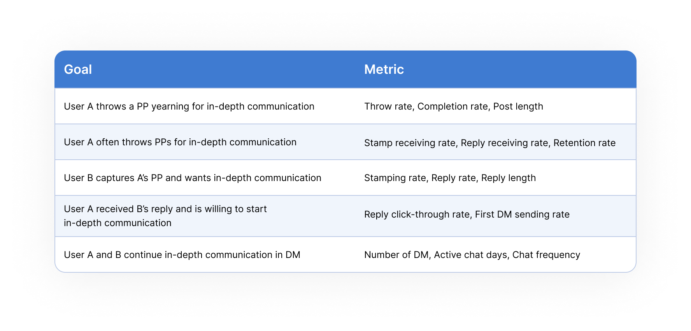

1st stage: Coordinated the
launch of MVP
Reframing the problem
If you have no idea what Paper Plane (PP) is and how does it
works, the same üò¢ (when I joined the team as a product
designer intern
just 1 month before
the launch of MVP)
At that time, the UX design for the MVP was almost done, and
the time left for my onboarding was
only 1 week! In
the next few weeks, I coordinated with visual designer and
developers to make sure the pixel-perfect of the final
deliverables. The PP 1.0 is all about
“wish”:
What is PP 1.0?
Capture a PP, stamp on it (and reply)
Send direct messages after building relationship
Where is PP?
PP initially lived in the Profile tab of iQIYI mobile APP,
as a
mini-APP under
the Recommendation section. iQIYI with 500M MAU functioned
as our
incubator.
What is the problem
What is the problem
Then, in mid June, our
MVP launched.
At first, we
got exciting DAU and thousands of PPs in few days.
But
then 1 week later, the DAU dropped drastically.
Users
hardly find one to communicate deeply.
We
failed, not officially...
Why is the problem important
Why is the problem important
In order to understand how serious the problem was from a
business perspective, I unpacked the concept of in-depth
communication in PP and
defined business success metrics
to measure it
I collaborated with PM and data analyst and used this
framework to dive deep into the problem:

Digging in to the data revealed some key insights into
current PP’s effectiveness in faciltating in-depth
communication. Although the conversion rate on both the
thrower and capturer sides was not good,
the capturer’s Stamp-Reply-Chat conversion rate was
extremely low:
Where does the problem come from
Where does the problem come from
Taking a close look at the PPs users threw, I realized the
exciting DAU of the first week might just be a
luck. Many students graduated in
mid June, they had lots of wishes to make for their future.
But 1 week later, when there were no more students making a
wish, it’s no wonder PP 1.0 was
not sustainable. To better
understand what led to the problem,
I analyzed PP’s current user flow
This analysis framework allowed me to find out the areas we
wanted to fix. It highlighed the problem was actually a
knock-on effect, originated from
the poor content users could
include in Wish PPs:
I realized that unless we started to redesign the Write and
Throw experience, PP would stay unsustainable forever. I
tried to
reframe the problem and redefine the goals:
2nd stage: Led the PP 2.0
design
From unsustainable to sustainbale
To guide users to disclose deeply with meaningful stories, I
came up with a
hypothesis about mood, based on
the insights from our
content analysis of those PPs
that had a higher reply rate:
But at that time, we actually had other hypotheses and
directions, so I did need to
quickly validate my hypothesis
and gain buy-in from my
stakeholders:
Desirability
Desirability
I sent short surveys in our user chatroom and read many
social computing research papers about self-disclosure to
uncover some key insights about
user desirability:
-
People want to talk about their mood in PP and get stamp
and reply from others
-
People tend to disclose more in a
negative emotional state
because the disclosure helps relieve distress
-
People are hesitant to disclose their negative
experiences in other SNS, because they have concerns
that these posts would be finally searched by their
friends and family
-
People with bad mood want to communicate deeply with
others to get mental healing
-
People with good mood are willing to help those with bad
mood to get out of it
Viability
Viability
I did competitive analysis and even more desk research to
confirm that this hypothesis is
business viable:
-
Mood is effective in
fostering in-depth self-disclosure due to people’s
emotional or anxiety-based motives for self-disclosure
-
PP has good affordance to
support users’ mood related self-disclosure
-
Mood PP makes the platform
sustainable by saving a lot
of content marketing resources
Feasibility
Feasibility
This hypothesis is also
technologically feasible because:
-
Mood PP could leverage the existing infrastructure of
Wish PP, so we don’t need to invest too much development
effort
-
Mood PP could help with the improvement of current PP
matching algorithm by providing new content-layer
information
Having user needs, business goals and technology all work
in harmony, this hypothesis
helped me gain alignment from the
team. We decided to prioritize it for the upcoming sprints,
and so we started the evolution from PP 1.0 to
2.0. This 2.0 didn’t only mean
the evolved product but also the
improved team dynamics:
Team Dynamics 2.0
Team Dynamics 2.0
At that time, our development team and product team were
distributed in 2 cities,
inevitably leading to more time on coordination, debate and
building team alignment. In order to achieve
a shared vision in the team, I
tried to improve the team dynamics in several ways. The most
effective way I found was holding
a weekly PP award:
I collected some PPs that I found meaningful and let the
team to vote for the top3 PP in their mind. This let the
team have
tangible feeling of what values we were creating for
our users
and helped them develop empathy.
What was exiciting is that from then on, our developers
started to capture PPs
proactively on a daily basis and
they sometimes found the hidden bugs and got to fix them
immediately. Also, we started to take this weekly PP award
event as an
unofficial weekly standup meeting. We became a real
lean and agile team eventually
Paper Plane
2.0
Paper
Plane
2.0
With improved team dynamics, our team was dedicated to
delivering PP 2.0 with great
passion that used mood as a prompt to foster in-depth
disclosure and communication and eventually help achieve
mental healing. As a product designer, I incorporated myself
in the agile process by
planning ahead and breaking down
the whole design requirements into actionable work chunk for
each sprint:
Design
Challenge
1
Design
Challenge
1
How to help users write down their mood-related stories?
I started the design explorations and tried my best to
leverage the existing infrastructure
of Write and Throw flow which users were already
familiar with. I eventually
narrowed down to
two competing design concepts: An
emoji tag to mark down EMOTION, A survey to mark down MOOD
Design 1: An emoji tag to
mark down EMOTION
üëç Fully built in the existing PP Writing page: higher
leanability
üëç Less development effort
üëç
Users could send unlimited PPs tagged with a emoji per
day
üëé Easy to be ignored
üëé The emotion is
not fixed but fleeting
Design 2: A survey to mark
down MOOD
üëç Immersive, easier to evoke users‚Äô mood
üëç Topic
tag helps users recall their mood-related stories
üëç
Topic tag could be used to improve matching algorithm
üëç
The Mood lasts for longer, more likely with a story
behind
üëé Additional page leads to additinal
cognitive load
üëé Users are restricted to only
throw 1 Mood PP per day
The essential difference between
the 2 concepts is that the 1st design is more likely to
evoke users’ emotion while the 2nd one tend to evoke mood:
Perhaps this was
the most controversial design
decision for our team
Design 1 had more benefits on the business and technology
side, but I strongly supported Design 2 based on the
rationale that mood and mood-related stories were the keys
to in-depth and meaningful communication and mental healing
was all about getting out of bad mood, not emotion. To close
on this decision, I quickly made a plan for
guerrilla testing:
Testing the 2 design concepts with 12 participants revealed
that:
-
Users frequently ignored the
Add Emoji feature of Design 1
-
Users wrote much longer and
disclosed deeper in Design 2,
usually with a personal story
-
Users particularly liked the topic tag feature which
gave them prompt about what to write
-
Users thought the flow of Design 1 was simpler and
easier to understand, but they also
didn’t think Design 2 was complicated
-
Users found the Add Emoji button of Design 1 placed at
the top of the screen
hard to reach
Based on the insights from testing, and thanks to our
improved team dynamics, our team all agreed to pick
the 2nd design concept
Design
Challenge
2
Design
Challenge
2
HMW build MPP environment to better support users’ in-depth
communication behavior and mental healing goal?
Good online space needs structure, just like physical space.
Structured online space encodes users’ particular
behavior norms. Take a look at Twitter interms of physical space: it’s
like a vast expanse, where there are people talking about
sports, arguing about politics, yelling at each other,
trying to get a job, all in the same space, with no walls,
no divisions. This is not what our users who are yearning
for in-depth communication and mental healing want
To plan out what Mood PP environment would be like, I
started from figuring out the undesirable traits of
the worst possible physical space I could imagine —
nightclub, a place that hardly shapes mental healing behavior. This
helped me
derive the opposite principles to
build our environment:

It then became clear that we should structure an
immersive and warm space that
evokes writer’s mood and receiver’s empathy
deep inside:
Iteration
Iteration
After our PP 2.0 launched, we received much more
high-quality PPs every day and the DAU was exciting again.
But I knew there was still space for improvement, so
I kept a close eye on our user feedback posts and
conducted usability testing
which highlighted the top risk in the product to be the
low discoverability of the original Wish PP:
I then tried to iterate my design to
increase the visibility of
switching between MPP and WPP:
Providing a direct access to switch between 2 PPs meaned
that there was no enough space for the 3 buttons at the top
of the screen. I thought it was a great opportunity to
reorganize all buttons in the
writing page to
better match user mental model:
3rd stage: Delivered an
end-to-end user journey
Connecting to iQIYI ecosystem to support business strategy
updatee
Now that PP has became effective in facilatating users’
in-depth and meaningful communication, I started to
think in big-picture: how can our
PP connect to iQIYI existing ecosystem to
add new business value to iQIYI?
iQIYI has rich media content resources. Original series. But
when no 热剧，DAU drop. How can we retain 他们 by
recommending other TV or movies of their interest. How can
we guide them to explore other contents on iQIYI without
pushing them to... (Recommended is not that effective)
Our PP users are also
iQIYI users of course. Apart from
gaining in-depth communication, their primary goals must be
watching their favorite TV shows,
movies, and more, and
explore and discover what they
might like
Although PP seemed to be an individual experience inside
iQIYI,
these 2 experiences were not incompatible at all. In fact we have received some PPs that were related to
the streaming content on iQIYI. I also read reviews of iQIYI
from App store to discover if there was any unmet needs of
iQIYI users that could be fulfilled by PP:
So... why not enable users to discover iQIYI’s rich media
content in PP through
an unobtrusive way?
I came up with 2 concepts which leveraged PP’s architecture
to serve iQIYI users’ needs and create PP’s business model:
While concept 1 could further enrich our PP ecosystem by
adding a new type of PP, it was
not that aligned with the vision of PP
but would distract users from having in-depth and meaningful
communication with others. So we chose to move forward with
concept 2, a more
lightweight experience that could
entertain users with iQIYI original series: